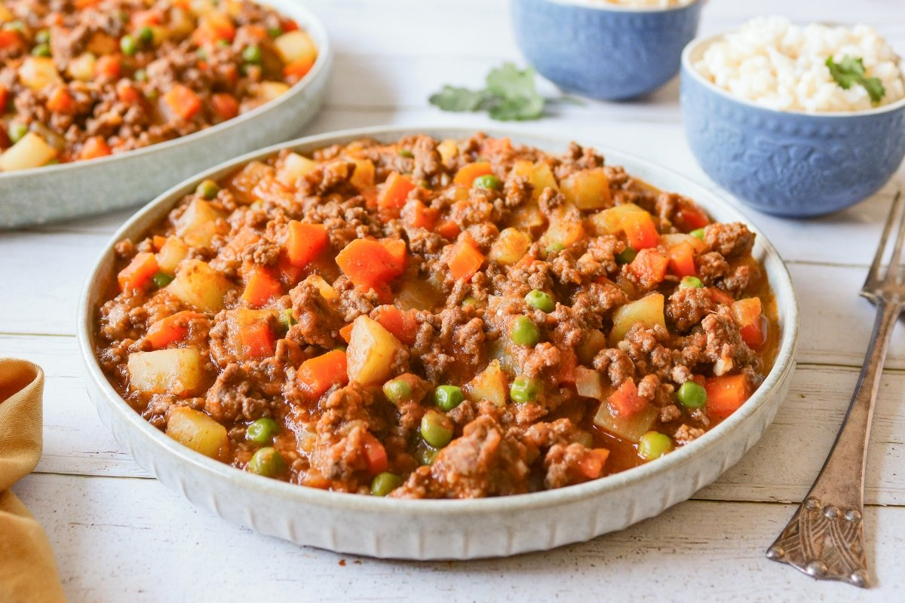

Inicio
Picadillo

Descripción
El picadillo es un plato tradicional de muchos paìses hispanos y las Filipinas. Es un plato cuyos ingredientes van muy picados, hecho con carne picada, tomate y otros ingredientes.
Ingredientes
- 600 gr de carne de res
- 4 tomates
- 4 zanahorias
- 3 papas
- 2 cebollas
- 1 taza de chicharo
- 2 dientes de ajo
- 2 chiles chipotle adobado
- Sal
- Pimienta
Pasos
- Picar finamente una cebolla y freìrla.
- Una vez la cebolla este un poco cocida agregar la carne molida, cocinar hasta que este casi hecha. Sazonar con sal y pimienta.
- Licuar una cebolla, los dientes de ajo, los tomates y los chiles con un chorrito de agua (puntos extra si es caldo de res).
- Agregar la mezcla que licuamos al sartèn con la carne.
- Cortar la zanahoria y la papa en cubitas, agregar al sartèn.
- Añadir al sartèn los chìcharos y rectificar el sazòn.
- Cocinar hasta que la zanahoria y la papa estèn suaves.
- Servir.